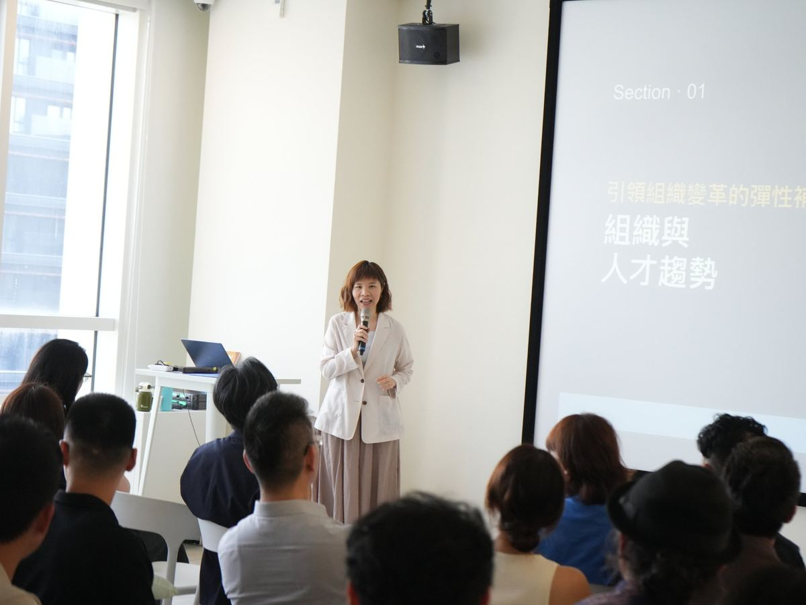
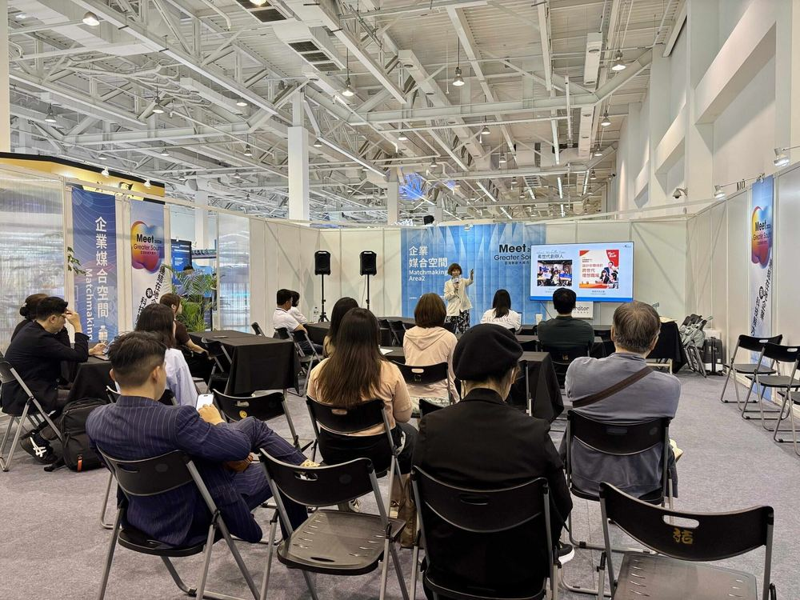
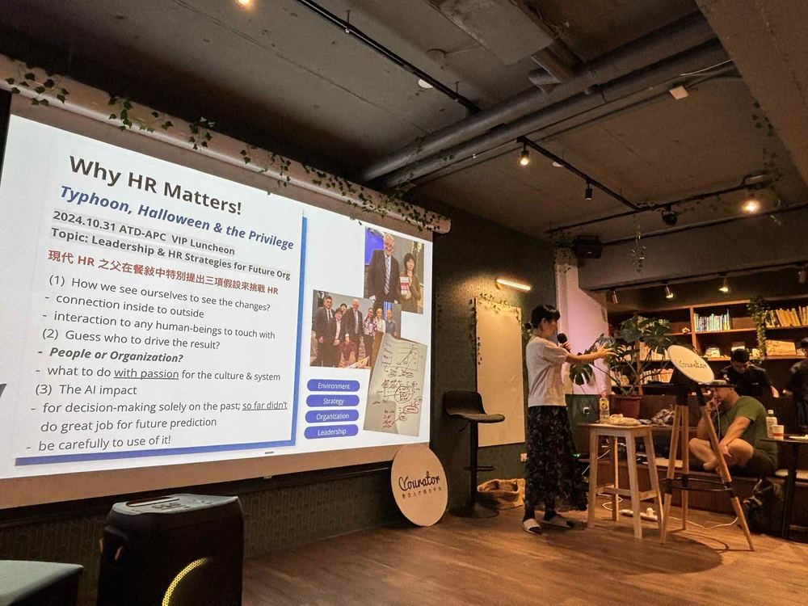

A Guide to Organizational Iteration · OIC
Where is your organization in its life cycle? Five stages × 15 facilitated dialogues. OIC doesn't hand you the answer. It helps you see, in the room, where your organization truly stands, and leave with actions to move forward.

Sources: Mercer (2025); AIHR (2025)
Drawn from the OIC handbook, these principles guide every intervention.
Come in to understand, not to fix. Diagnose the real pain points, build consensus with data, then let trust carry the change. HRBPs who rush to prescribe usually solve the wrong problem.
Drawing on Dave Ulrich's work: when employees understand why something must change, resistance drops sharply. Iteration succeeds or fails not on process design, but on whether its purpose reaches everyone it affects.
A 60–90 day pilot plus a replicable rollout playbook turns change into organizational memory. Build it into process, policy and systems so it no longer relies on one person.
You can't intervene with precision until you know your stage. Each stage has its own HR priorities and areas of action.
Set the cultural DNA and identify core talent. Culture first, then systems.
Talent density and leadership readiness are the most critical HR investments.
Peak scale, but rising risk of bureaucracy. Hold the tension between stability and innovation.
Find the root causes fast, retain key talent, and build executive consensus with data.
Rebuild trust, redesign systems, reboot the culture. Trust first, then systems.
Ten single-choice questions, five minutes. Your personalized life-cycle diagnostic report is generated instantly and sent to your inbox. It's the first step into the OIC learning paths, and the fastest way to see where your organization stands today.
OIC offers two separate paths designed for different roles. Both lead to the same goal: getting the organization truly moving.
When CXOs experience a life-cycle diagnosis firsthand, resistance to change drops sharply. A D1 experience session, a D30 case-based follow-up and a D60 deep-dive: leadership sees it first, so HR has room to act.
Explore Leader Path (Mandarin) →From knowing to doing. A self-paced online course, half-day or full-day workshops, then Self-Check for in-house replication. HR gains the ability to diagnose, the language to win over leadership, and a reason to bring CXOs to Leader Path.
Explore HR Pro Path (Mandarin) →Every OIC facilitated dialogue has been tested again and again in real conversations with founders, leadership teams and HR partners.


"The 5 stage life cycle and the ideas in Age of HR look like they complement each other."
— Dave Ulrich · Professor, Ross School of Business · Author, The Age of HR · LinkedIn DM, 2026